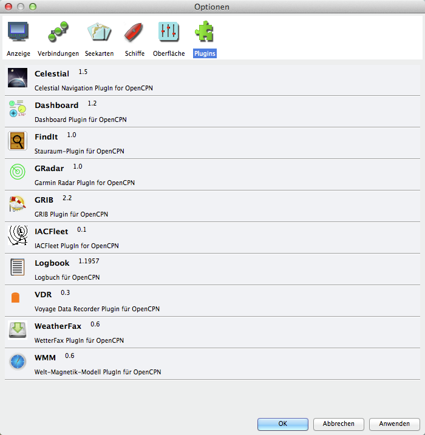

Plugins
Seit OpenCPN Version 2.2 gibt es sogenannte Plugins, kleine Programm-Erweiterungen von Dritt-Entwicklern, die der Anwender einbinden kann. Aktivierte Plugins erscheinen als zusätzliche Symbole in der Werkzeugleiste (rechte Seite ab Fragezeichen-Symbol) und können von dort aufgerufen werden.
Zwei Plugins sind Bestandteil der offiziellen OpenCPN Installation für Mac OS X von der OpenCPN Homepage:
Diese Plugins wurden selbst für OS X compiliert und stehen nur in dieser Mac OS X Version von OpenCPN zur Verfügung:
Plugin-Versionen können nicht vermischt werden, d.h., die öffentlichen Versionen laufen nicht mit dieser Version und umgekehrt. Natürlich können auch nicht Plugins für unterschiedliche Betriebssysteme oder basierend auf unterschiedlichen wxWidgets Versionen vermischt werden.
Die Plugin-Schnittstelle hat sich im Laufe der OpenCPN-Versionen mehrfach geändert. Ältere Plugins laufen daher nicht. Verwenden Sie daher immer die aktuellsten Plugins. Einige Plugins sind nur für Windows verfügbar und können daher nicht für Mac OS X compiliert werden.

Die Links unten führen zu dem jeweiligen englischsprachigen Forum-Thread, in dem die Plugins diskutiert werden.
Das WMM Plugin zur Anzeige magnetischer Variation.
Ein Logbuch Plugin.
Ein Karten Downloader/Updater Plugin.
VDR oder Voyage Data Recorder.
Ein Google Earth Plugin - nur Windows.
Ein BSB4 Plugin - nur Windows, nicht frei.
Ein Plugin für NV Verlag Karten - nur Windows,
nicht frei.
Das IACFleet Plugin
Installieren eines Plugin
Bei Mac OS X sind die Plugin-Dateien "libxyz_pi.dylib" im Programmpacket Contents/Plugins/ enthalten.
Aktivierung eines Plugin
Plugins werden mit Klick auf die Lasche Plugin in den Einstellungen verfügbar gemacht. Dort wird beim
jeweiligen Plugin "Aktiviere" (Enable) gedrückt. Das entsprechende Symbol erscheint dann auf der
Werkzeugleiste.
Sicher werden Sie viele Plugins nicht gebrauchen können. Deaktivieren Sie sie dann. Sie können sie auch dauerhaft löschen, indem Sie die entsprechende Datei
"libxyz_pi.dylib" im Programmpacket Contents/Plugins/ löschen.
 Grib Werkzeugleiste Symbol
Grib Werkzeugleiste Symbol
Dashboard Werkzeugleiste Symbol